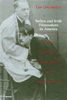

<body bgcolor="#FFFFFF" text="#000000" link="#0000FF" vlink="#CC0000" alink="#CC0000"><center><hr width="350" size="1" align="center" noshade>Four major American Film directors are studied through the lens of their ethnicity<hr width="350" size="1" align="center" noshade><p><a href="https://cdcshoppingcart.uchicago.edu/Cart/ChicagoBook.aspx?ISBN=9780877226970&&PRESS=temple" target="_top">Buy this book!</a> | <a href="https://cdcshoppingcart.uchicago.edu/Cart/Cart.aspx?PRESS=temple" target="_top">View Cart</a> | <a href="https://cdcshoppingcart.uchicago.edu/Cart/Cart.aspx?PRESS=temple" target="_top">Check Out</a></p><p></p></center><!--none//--><h1>Italian and Irish Filmmakers in America</h1>
<H2>Ford, Capra, Coppola, and Scorsese</H2>
<h3>Lee Lourdeaux</h3>
<P>cloth 0-87722-697-0 $44.50, Jun 90, <FONT COLOR=#990033>Out of Stock Unavailable</FONT>
<br>paper 1-56639-087-7 $24.95, Mar 93, <FONT COLOR=#990033>Out of Stock Unavailable</FONT>
<br>Electronic Book 1-43990-355-7 $45.50 <FONT COLOR=#990033>Out of Stock Unavailable</FONT>
<BR> 288 pp
22&nbsp;figures
</P><BLOCKQUOTE><I>"This penetrating study examines how these filmmakers confronted their cultural heritage and used it as a counterpoint to their depiction of mainstream America."</I>
<br>&#151<b><I>American Cinematographer</I></b><I></I></BLOCKQUOTE>
<p>In this unique film history, Lee Lourdeaux traces the impact of Irish and Italian cultures on four major American directors and their work. Defining the core values and tensions within each culture, and especially focusing on the influence of American Catholicism, he presents John Ford, Frank Capra, Francis Coppola, and Martin Scorsese as ethnic Americans and film artists. Lourdeaux shows each filmmaker on set with writers and actors, learning to bypass stereotypes in order to develop a shrewd reciprocal assimilation between his ethnic background and Anglo America.
<p>Beginning with D. W. Griffith’s depiction of Irish and Italian immigrants, the author discusses Hollywood’s stereotypical portrayals of ethnic priests, cops, politicians, and gangsters, as well as their surface acculturation in the movies of the 1920s. By the decade’s end, John Ford was using all-American stories to embody the basic myths and tensions of Irish-American life. In his later westerns and foreign films, he tried to understand both Irish political strife and the key figures of Irish liturgy. Frank Capra pitted Italian family values against the Anglo success ethic, turning out social comedies about oppressed little people. Several decades later, Martin Scorsese and Francis Coppola were highly critical of their religio-ethnic heritage, though they gradually discovered that to outline its weaknesses, like the blind pursuit of success, was to fashion a critical mirror of mainstream America. Lourdeaux discusses a number of recent films by Coppola and by Scorsese that have not yet been analyzed in any book. And, in the chapter on Scorsese, a personal interview with the director reveals how his ethnic childhood shaped his work in film.
<p>Examining the conflicts within American culture, Lourdeaux shows how the filmmakers themselves had to confront the self-destructive aspects of their ethnic background, not only to accommodate WASP audiences but to better understand their own heritage. He also observes that ethnicity is a strong draw at the box office, as in <I>The Godfather</I>, because it creates a sense of the Other who can both be admired and at the same time ridiculed. Illustrated with scenes of the movies discussed, this fascinating film history tells how four of America’s most famous filmmakers assimilated their ethnic backgrounds on set and on screen.
<BR>&nbsp;<h2>Reviews</h2>
<p><I>"Mr. Lourdeaux walks a tricky path in analyzing the films of each [director]: avoiding the trap of excessively detailing their lives and many films, while steering clear of ethnic stereotyping. Those interested in ethnic influences on outstanding persons or in the production of films by four of the best will find the book enjoyable."</I>
<br>&#151<b><I>The Baltimore Sun</I></b>
<p><I>"This is an invaluable book because it arouses critical awareness of the ethnicity underlying many Hollywood movies that might otherwise appear merely to represent American archetypes."</I>
<br>&#151<b><I>Journal of American Studies</I></b>
<p><I>"A valuable addition to the literature on ethnic identity in film. The insights Lourdeaux offers into major figures like Griffith, Ford, Capra, Coppola, and Scorsese contribute significantly to our understanding of their films."</I>
<br>&#151<b>Virginia Wright Wexman</b>, University of Illinois at Chicago
<p><I>"For a number of years now, church historians have been giving us an account of American Catholicism that is much richer and more varied than the older institutional accounts of the Catholic Church ever let on. In this comprehensive and insightful study, Lee Lourdeaux shows us how much the ethnic movies of directors like Ford and Capra, Coppola and Scorsese have to teach us as well about Irish- and Italian-Catholic mores and instincts."</I>
<br>&#151<b>John B. Breslin</b>, S.J., Director
<p><I>"A wonderfully sensitive, intelligent study of the complex issue of how the Catholic imagination works in the creative personalities of those raised in the Catholic heritage."</I>
<br>&#151<b>Andrew M. Greeley</b>
<BR>&nbsp;<h2>Contents</h2><P>
<p>Acknowledgments
<br>Introduction: The Design of the Book
<p>1. Irish and Italian Immigrants and the Movies
<br><I>Framing Ethnic Culture &#149
Filming Ethnicity Piecemeal: D. W. Griffith's Women and Other Precedents</I>
<p>2. Irish and Italian Immigrant Stereotypes in the 1920s
<br><I>Irish America Pays a Price for Success &#149
Immigrant Italians for Anglo-American Audiences</I>
<p>3. John Ford and the Landscapes of Irish America
<br><I>An Irish-American Idea of Film Production &#149
Urban Irish America: Ethnic Dangers and Virtues &#149
Ireland Remembered: The Holy Mother, Judas, and Mary Magdalene &#149
Faraway Places with Irish Types &#149
The Wild West: Irish Identity as American History</I>
<p>4. Frank Capra and His Italian Vision of America
<br><I>The Italian Success Ethic in Capra’s Films &#149
The Early Years: Irish Types and WASP Woman &#149
The Mature Years: Italian Social Ethics in Anglo America &#149
The Follow-Through: An All-American Ethnic Story</I>
<p>5. Francis Coppola and Ethnic Double Vision
<br><I>Growing up with the Success Ethic &#149
From Angry Irish Son to Italian-American Mother &#149
Facing the Self-Destructive Successful Father &#149
The Flight from Italian/American Patriarchy</I>
<p>6. Martin Scorsese in Little Italy and Greater Manhattan
<br><I>Boyhood in Little Italy &#149
The Italian-American Family on Set &#149
Doing Penance in the Streets &#149
Outside Little Italy with an Italian-American Conscience</I>
<p>List of Films
<br>Selected Bibliography
<br>Index
</P><BR>&nbsp;<H2>About the Author(s)</H2>
<P><b>Lee Lourdeaux</b>, a journalist who specializes in the arts, writes for numerous national publications and holds a doctorate from the University of Chicago.</P>
<BR><H2>Subject Categories</H2>
<p><A HREF="/tempress/general.html" TARGET="_top">General Interest</a>
<BR><A HREF="/tempress/american.html" TARGET="_top">American Studies</a>
<BR><A HREF="/tempress/cinema.html" TARGET="_top">Cinema Studies</a>
</p>
<p align="center"><a href="https://cdcshoppingcart.uchicago.edu/Cart/ChicagoBook.aspx?ISBN=9780877226970&&PRESS=temple" target="_top">Buy this book!</a> | <a href="https://cdcshoppingcart.uchicago.edu/Cart/Cart.aspx?PRESS=temple" target="_top">View Cart</a> | <a href="https://cdcshoppingcart.uchicago.edu/Cart/Cart.aspx?PRESS=temple" target="_top">Check Out</a></p><p><font face="Arial" size="1"><a href="copyright.html" onMouseOver="window.status='Web Copyright Policy';return true;" onMouseOut="window.status=''" title="Web Copyright Policy">&copy;</a> 2015 <a href="http://www.temple.edu" target="new" onMouseOver="window.status='Link to Temple University home page';return true;" onMouseOut="window.status=''" title="Link to Temple University home page">Temple University</a>. All Rights Reserved. http://www.temple.edu/tempress/titles/652_reg.html</font></p>